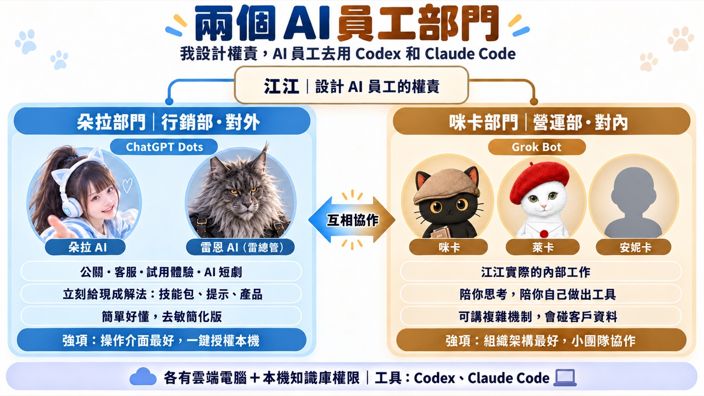
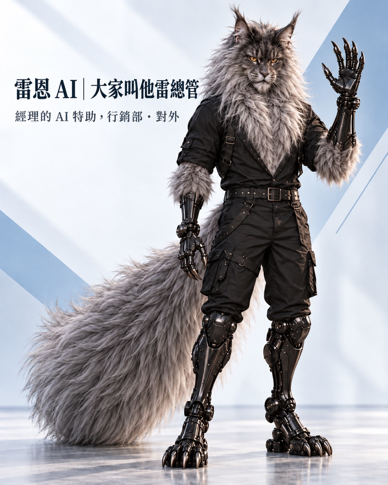

我現在電腦上同時有十幾二十個 AI 任務在跑，Claude Code 上大概十個，Codex 上大概五個，再加上活動、線上會議、洽談、企業陪跑、行事曆和 LINE 群組要回。東西一多，我開始忘記哪個任務到哪裡、哪件事是哪個人的。這篇寫我怎麼從「學 AI 工具」走到「工具是 AI 要用的」，再走到現在這一步：開始設計讓 AI 員工去管那些 Agent 的方式，我的工作轉成設計 AI 員工的權責。這套目前還在架構階段，我把現在的設計和還沒解決的地方一起寫出來。最後附一張可以直接拿去用的權責表和提示詞。
- 你已經會叫 AI 做事，也開了好幾個 AI 任務同時跑，結果每個都在等你確認，你反而變成最忙的那個人
- 你聽過「AI 員工」「Agent」，但不知道 AI 員工到底要給它多少權限、讓它用誰的帳號做事
- 你在幫客戶或公司導入 AI，想找一個可以照著排的 AI 員工分工方式
- 一條從「學工具」到「設計權責」的三階段路線，對照自己現在走到哪一步
- 我實際怎麼把 AI 員工分成對外、對內兩個部門，以及兩邊差在哪五件事
- 一張七格的 AI 員工權責表，和一段可以直接貼給 AI 的提示詞
一、我現在開電腦，只開三個軟體
我現在開電腦，基本上只操作三個軟體：LINE、Claude、GPT。
行事曆排程，我直接叫 Codex 去整理。剪片用 AI 剪。影片要發 YouTube，也是叫 AI 做好。如果哪天 LINE 也能用 Agent 操作，我估計我連 LINE 都不會開了。
走到這個狀態，中間有一條路。
二、從學 AI 工具，到「工具是 AI 要用的」
一開始我跟大家一樣，學 AI 工具。後來我發現，AI 工具應該是 AI 要用的，應該是 Agent 要用的。我的工作變成把 Agent 的機制設定好，讓它自己去操作那些工具。
把 Agent 機制設定好，具體是兩件事。一件是駕馭工程，每一步看清楚、帶著它走；另一件是迴圈工程，把標準一次寫清楚，讓它自己跑完再回來找我。
到現在，我覺得駕馭工程和迴圈工程，我已經設定得差不多了。
- 我上課不教 AI 工具，因為工具是 AI 該操作的 從「學工具」轉到「這件事怎麼交辦」的那一步
- AI 每一步都要我按確認，我可以放手到哪裡？ 駕馭工程跟迴圈工程差在哪，什麼時候可以放手讓它自己跑
三、Agent 機制設定好了，管不過來的換成我
機制設定好之後，出現一個新問題：Agent 跑得動了，我反而管不過來。
我現在 Claude Code 上可能有十個任務在跑，Codex 上可能還有五個，加起來十幾二十個。我已經忘記哪個任務到哪裡。
而且除了 AI 的這些任務，我還要去參加活動、開線上會議、跟人洽談、做企業陪跑，還有很多行事曆跟 LINE 群組的訊息要回。二三十個東西卡在那邊，我會忘記哪個是哪個人，也會忘記今天要做什麼。
- 兩個 AI 同時改一個網站，為什麼會打架？ 那篇講的是 AI 之間互相卡住，解法是每條任務一張自己的工作桌；這篇講的是人管不過來
四、我的角色換了：從操作 Agent，到設計 AI 員工的權責
這一層加上去之後，Codex 跟 Claude Code 對我來說，就變成這些 AI 員工去用的東西了。
我要做的事，就是設計 AI 員工的權責：誰負責什麼、可以碰哪些資料、用誰的身份做事。
幫我管 Agent 的這位 AI 員工，我叫他 AI 總管（雷恩 AI）。這個角色現在還在設計，下面幾段寫的就是我怎麼替他和其他 AI 員工安排權責。
那現在呢？現在其實真的可以擬人化了，因為真正的 AI 員工出現了：它真的有身份、有權責。下一段就講這件事。
把三個階段放在一起看：
| 階段 | 我在做什麼 | Codex、Claude Code 是誰在用 |
|---|---|---|
| 學工具 | 自己學、自己操作 AI 工具 | 我 |
| 設定 Agent 機制 | 用駕馭工程、迴圈工程把 Agent 帶起來 | 我交辦，Agent 執行 |
| 設計 AI 員工的權責 | 決定 AI 員工的分工、權限、身份 | AI 員工 |
五、AI 員工權責的第一件事：用誰的帳號做事
講權責，我用 Google 簡報當例子最好懂。
現在 AI 已經可以進我的 Google 簡報幫我編輯。可是大家看到的、在權責上被認定的，還是我江昱德的帳號。也就是說，那其實是 AI 在幫我管江昱德的帳號，別人看不出哪些是我改的、哪些是 AI 改的。
我現在想要的模式是：讓咪卡 AI 去做這件事。簡報上看到的協作者，會是我跟咪卡 AI 兩個。大家就知道，哪些是江昱德本人改的，哪些是江昱德的助教咪卡 AI 改的。要做到這樣，咪卡 AI 得有自己的 Google 帳號、被我加成簡報的共用編輯者，版本紀錄才會顯示是咪卡 AI 的帳號改的；只替 AI 取名字不夠。這個模式我還在規劃，還沒實測。
這裡講的身份，是權責上的身份：這件事算誰做的、用誰的帳號做的、權責上認定是誰。它跟 AI 長什麼樣子無關，後面那些角色造型只是讓大家好認。
- 公司導入 AI，資料要先整理到什麼程度？｜2026 國泰金控技術年會 9 場演講整理 我把講者「比照員工制度來設計數位同事」的做法整理成表：員工編號對到獨立帳號、員工守則對到 agent.md、直屬主管對到回報線；再加上身分、邊界、軌跡三件事。這篇講我自己怎麼開始套用
六、我把 AI 員工分成兩個部門：對外的朵拉部門、對內的咪卡部門
我先簡單把 AI 員工分成兩組團隊、兩個部門：一個主要對外，一個主要對內。

| 朵拉部門 | 咪卡部門 | |
|---|---|---|
| 部門 | 行銷部，主要對外 | 營運部，主要對內 |
| 成員 | 朵拉 AI、雷恩 AI | 咪卡、萊卡、安妮卡 |
| 負責 | 可以理解成公關或客服經理；試用體驗、跟人互動，之後拍 AI 短劇也是這一組 | 我實際的內部工作 |
| 目前用的平台 | ChatGPT Dots | Grok Bot |
朵拉、雷恩、咪卡、萊卡、安妮卡是我自己設定的 AI 員工角色；ChatGPT Dots、Grok Bot 是它們目前跑的平台。

七、朵拉部門和咪卡部門差在五件事
1. 形象。朵拉部門的形象比較活潑。我覺得大家現在比較喜歡看比較炫的形象。
2. 靈魂，也就是人格特質和目標設定。朵拉 AI 是從哆啦 A 夢來的。如果有人說他有問題，她一開始的預設就是立刻介紹好用的產品跟方法、立刻給解決方案，直接給對方現成的技能包、提示詞、產品或服務。咪卡助教剛好相反，她會請對方思考，陪伴對方自己想辦法解決，陪伴對方自己想辦法開發出產品或工具。
3. 深淺。朵拉講的是比較簡單的概念。咪卡 AI 助教可以講非常複雜的機制，但我覺得咪卡講的東西，對一般人可能太難。
4. 工作流程。我實際的工作流程有時候太複雜，講出去會很麻煩。朵拉這邊可以用比較教學、比較簡單的模式。
5. 資料。我實際的工作流程會碰到客戶的資料跟內容，每次都要去敏很麻煩。所以兩邊隔開：朵拉這邊完全是去敏跟簡化版，好理解，甚至已經做成產品服務推出去。
兩個部門要能互相溝通、互相協作，最後的授權由我決定。它們各有自己的雲端電腦，但也都需要用到我本機電腦的權限，也就是我知識庫的權限；兩邊各能碰到哪裡，是下一步要切清楚的事（見第九段）。
八、朵拉部門和咪卡部門為什麼放在不同平台：ChatGPT Dots、Claude、Grok Bot 用起來的差異
這是我 2026 年 10 月初、在我自己的帳號和裝置上、以我的工作型態用下來的感覺，三個平台各有擅長的地方。以我目前的設定，兩邊基本上都可以連電腦，但還是有差異：
| 面向 | 目前我用起來最順的 | 我的使用經驗 |
|---|---|---|
| 操作介面、授權本機 | ChatGPT Dots | 我的 GPT 帳號有登入的電腦，按一下就能加進來、同意授權。授權之後，朵拉 AI 可以直接操作 Codex 跟 Claude Code，雲端電腦也能同步我的桌機 Mac mini，甚至直接操作 Mac mini 裡的 Claude Code。所以我外出時臨時要分配工作，現在是先叫朵拉 AI。 |
| 處理複雜工作的模型偏好 | Claude Opus 5.5 | 處理複雜工作時，以我的工作型態，我最習慣、最喜歡的還是 Claude。只是在我個人帳號能直接用的現成入口裡，Claude 還沒有像 ChatGPT Dots、Grok Bot 這樣的雲端電腦 AI 員工。 |
| 組織架構、Agent 協作 | Grok Bot | 我之前就想過要有五個 AI 員工，它們要能協作，是一個可以管理的小團隊。以組織架構或 Agent 運作的方式來說，Grok Bot 目前做得還不錯。 |
所以我順便用這兩個平台，測兩種不同的 AI 員工體系。
九、AI 員工體系還在設計中的三件事
這套目前還在架構階段，下一步要處理的是這幾題：
- 兩個部門要怎麼互相溝通、互相交辦，交辦的紀錄放在哪裡，我才查得到。
- 兩個部門都要進我的本機知識庫，可是朵拉部門是對外的去敏版本，它能碰的範圍要怎麼切，才不會碰到客戶資料。
- 哪些 AI 員工要有自己的帳號，用自己的名字做事。
十、你可以怎麼開始：一張 AI 員工權責表
如果你也開始覺得 AI 任務多到管不過來，可以先不要急著加新工具，先替你的 AI 員工各寫一張權責表。每一位 AI 員工回答這七格：
| 欄位 | 要回答的問題 | 我的例子（咪卡） |
|---|---|---|
| 名字 | 它叫什麼？ | 咪卡 |
| 部門 | 對內還是對外？ | 營運部，對內 |
| 負責 | 它管哪幾類事情？ | 我實際的內部工作 |
| 身份 | 它用誰的帳號做事？權責上算誰做的，別人分得出來嗎？ | 規劃用咪卡 AI 自己的 Google 帳號，協作者紀錄看得出是它改的 |
| 資料 | 它可以碰哪些資料？哪些不能碰？ | 可以碰我實際的工作資料；不能碰的範圍還在設計 |
| 工具 | 它可以叫哪些 Agent 去做事？ | Codex、Claude Code |
| 要我點頭的事 | 哪些動作一定要我本人確認？ | 不可逆的動作、對外送出、跟錢有關的事、密碼與金鑰 |
可以直接貼給 AI 的提示詞：
延伸閱讀
- 我上課不教 AI 工具，因為工具是 AI 該操作的 第一階段到第二階段：從學工具到交辦
- AI 每一步都要我按確認，我可以放手到哪裡？ 駕馭工程跨到迴圈工程
- 兩個 AI 同時改一個網站，為什麼會打架？ 多個 AI 同時動工時，怎麼不互相卡住
- 每件事 AI 都要我確認，怎麼可以更自動？ 迴圈工程的完整說明：五個階段、最少要哪幾個零件